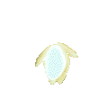

esbeltez y belleza. Rechazó a Eco, ninfa de Beocia y enamorada de Narciso,
tanto, que murió de pena al no poder conseguir su amor.
esbeltez y belleza. Rechazó a Eco, ninfa de Beocia y enamorada de Narciso,
tanto, que murió de pena al no poder conseguir su amor.
NARCISO
Hijo
del río Cefiso y celebre por su
esbeltez y belleza. Rechazó a Eco, ninfa de Beocia y enamorada de Narciso,
tanto, que murió de pena al no poder conseguir su amor.
Se cuenta que, cierto día, llegó Narciso al borde de una fuente, y al ver su imagen reflejada en ella, quedó prendado de sí mismo. Absorto de su propia belleza sumergió los brazos para alcanzar su propia imagen.
Desesperado por no poder conseguir el objeto de su pasión, languideció y quedó allí muerto victima de su extremada vanidad.
Narciso tuvo su castigo, fue convertido en la flor que lleva su nombre. Esta flor tenía la nefasta virtud de inducir en los hombres el último sueño de la vida y precipitar su voluntad hacia la muerte.
De esta historia viene el término:
¡Eres un Narciso!
Conocido como complejo de Narciso o Narcisismo. El término alude a quien es insensible a los sentimientos del amor ajeno y se centra únicamente en la admiración de sí mismo.
Relato anteriorRelato siguiente
Volver al índice Página Principal